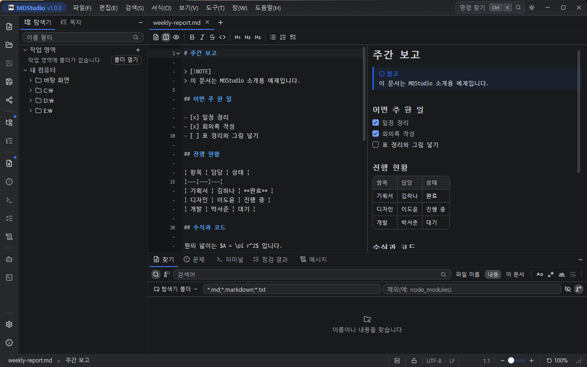
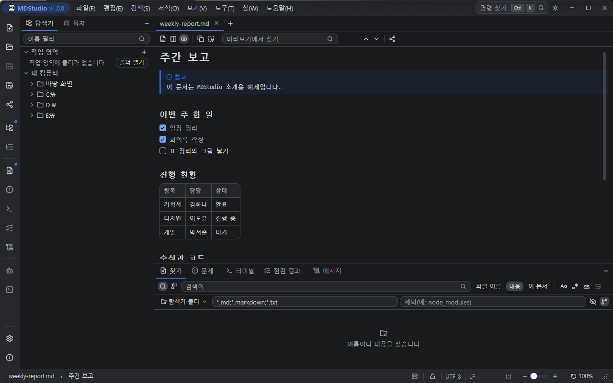

미리보기와 보기 형태
마크다운 문서는 원문을 고치는 소스 편집기와 서식대로 그린 미리보기로 봅니다. 둘의 배치는 보기 형태로 정합니다.
언제 무엇을 쓰나
| 보기 형태 | 보이는 것 | 이럴 때 |
|---|---|---|
| 편집기만 | 소스 편집기. 실시간 미리보기·편집기 나누기를 쓸 수 있습니다 | 원문을 많이 고칠 때, 한 문서의 두 곳을 함께 볼 때 |
| 편집기 + 미리보기 | 왼쪽 소스 편집기, 오른쪽 미리보기 | 고치면서 결과를 바로 확인할 때 |
| 미리보기만 | 미리보기. 편집 명령은 흐려집니다 | 완성된 문서를 읽거나 찾을 때 |
보기 형태 바꾸기
- 보기 > 보기 형태 > 편집기만·보기 > 보기 형태 > 편집기 + 미리보기·보기 > 보기 형태 > 미리보기만 중 하나를 선택합니다. 편집기 도구 모음 맨 앞의 보기 형태 버튼도 같습니다.
- 보기 > 보기 형태 > 보기 형태 전환(F9)은 편집기만 → 편집기 + 미리보기 → 미리보기만 차례로 넘깁니다.
- 텍스트·소스 코드 문서에는 미리보기가 없어 이 명령들이 흐려집니다.
- 여는 문서를 늘 미리보기만으로 보려면 도구 > 설정 > 일반에서 「문서를 미리보기로 열기」를 체크합니다.
미리보기는 입력을 멈추고 잠시 뒤 다시 그려집니다. 미리보기의 할 일 상자를 클릭하면 원문의 [ ]·[x]가 바뀝니다.

미리보기만 보기에서 읽기
- 미리보기를 클릭한 뒤 ↑·↓·Page Up·Page Down·Space·Home·End 키로 스크롤합니다.
- 편집기 도구 모음에는 복사·모두 선택·찾기 칸·내보내기만 남고, 찾기는 미리보기 안에서 찾습니다.
- 미리보기를 오른쪽 클릭하면 복사·모두 선택·찾기·다음 찾기·이전 찾기·내보내기가 나옵니다.

실시간 미리보기 켜기
편집기만 보기에서 소스 편집기 안에 서식을 그대로 그립니다. 커서가 닿은 표기만 원문으로 보입니다.
- 보기 > 보기 형태 > 편집기만을 선택합니다.
- 상태 표시줄의 눈 아이콘 「실시간 미리보기」를 클릭합니다. 보기 > 편집기 표시 > 실시간 미리보기도 같습니다.
- 굵게·링크·제목은 그 모양으로, 목록 기호·할 일 상자·인용·표·수식·다이어그램은 그림으로 보입니다.
- 다른 보기 형태에서는 그리지 않고 상태 표시줄 칸도 숨습니다. 편집기만으로 돌아오면 다시 그립니다.
- 도구 > 설정 > 편집기의 「실시간 미리보기(편집기만 보기)」도 같은 설정입니다.
스크롤 맞추기
- 편집기 + 미리보기에서 편집기를 스크롤하면 미리보기가 편집기 맨 윗줄의 내용으로 따라갑니다.
- 반대로 편집기가 따라갈지는 도구 > 설정 > 미리보기의 「미리보기를 스크롤하면 편집기도 따라 스크롤」로 정합니다.
- 미리보기를 더블클릭하면 편집기 커서가 그 자리의 원문 줄로 갑니다.
편집기 나누기
같은 문서를 한 탭에서 두 칸으로 봅니다. 편집기만 보기에서만 됩니다.
- 보기 > 편집기 나누기 > 위아래로 나누기(
Ctrl+Shift+\) - 보기 > 편집기 나누기 > 좌우로 나누기(
Ctrl+Alt+\) - 보기 > 편집기 나누기 > 나누기 해제
두 칸은 내용과 실행 취소가 같고, 커서·선택·스크롤은 칸마다 따로입니다. 같은 방향으로 다시 나누거나 구분선을 더블클릭하면 합쳐집니다. 다른 보기 형태로 바꿔도 합쳐집니다.
큰 문서와 그리지 않는 것
- 큰 문서는 미리보기가 편집기에서 보는 부분 둘레만 그립니다. 멀리 스크롤하면 잠시 뒤 그 둘레가 그려집니다.
- 그림은 문서 폴더 안의 파일만 보입니다. 웹 주소, 폴더 밖, 저장하지 않은 문서의 그림은 깨진 그림 표시로 나옵니다.
- 중첩이 지나치게 깊은 문서는 서식 없이 원문 그대로 보입니다.
- 다른 문서 임베드(
![[문서]])는 4단계, 한 문서에 64개까지 펼칩니다.
확대·축소하기
- 보기 > 글꼴 크게(Ctrl+=), 보기 > 글꼴 작게(Ctrl+-), 보기 > 글꼴 크기 기본값으로(Ctrl+0)를 선택합니다.
- 상태 표시줄의 −·+ 버튼과 슬라이더도 같습니다. 배율을 클릭하면 기본 크기로 돌아갑니다.
- 편집기와 미리보기 본문 글자만 바뀌고 메뉴 같은 화면 글꼴은 그대로입니다.
- 한도와 배율 유지는 도구 > 설정 > 일반의 「확대 상한」·「확대 비율 기억」으로 정합니다.